%matplotlib inline
import matplotlib.pyplot as plt
plt.style.use('seaborn-whitegrid')
import numpy as np간단한 선 도표
아마도 모든 플롯 중 가장 간단한 것은 단일 함수 \(y = f(x)\)의 시각화일 것입니다. 여기서는 이러한 유형의 간단한 플롯을 생성하는 방법을 먼저 살펴보겠습니다. 다음 모든 장에서와 마찬가지로 사용할 패키지를 플로팅하고 가져오기 위한 노트북을 설정하는 것부터 시작하겠습니다.
모든 Matplotlib 플롯에 대해 그림과 축을 만드는 것부터 시작합니다. 가장 간단한 형태로 다음과 같이 수행합니다(다음 그림 참조).
fig = plt.figure()
ax = plt.axes()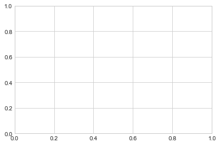
Matplotlib에서 그림(plt.Figure 클래스의 인스턴스)은 축, 그래픽, 텍스트 및 레이블을 나타내는 모든 개체를 포함하는 단일 컨테이너로 생각합니다. axes(plt.Axes 클래스의 인스턴스)는 위에서 본 것입니다. 즉, 눈금, 그리드 및 레이블이 있는 경계 상자로, 결국 시각화를 구성하는 플롯 요소를 포함하게 됩니다. 책의 이 부분 전체에서 일반적으로 변수 이름 fig를 사용하여 그림 인스턴스를 참조하고 ax를 사용하여 축 인스턴스 또는 축 인스턴스 그룹을 참조합니다.
축을 생성한 후에는 ax.plot 메서드를 사용하여 일부 데이터를 그릴 수 있습니다. 다음 그림과 같이 간단한 정현파부터 시작하겠습니다.
fig = plt.figure()
ax = plt.axes()
x = np.linspace(0, 10, 1000)
ax.plot(x, np.sin(x));
마지막 줄 끝에 있는 세미콜론은 의도적인 것입니다. 출력에서 플롯의 텍스트 표현을 억제합니다.
또는 PyLab 인터페이스를 사용하여 백그라운드에서 그림과 축을 생성합니다. (이 두 인터페이스에 대한 자세한 내용은 하나의 가격으로 두 개의 인터페이스를 참조하세요. 다음 그림과 같이 결과는 동일합니다.
plt.plot(x, np.sin(x));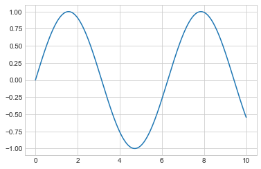
여러 줄이 있는 단일 그림을 만들려면(다음 그림 참조) ‘plot’ 함수를 여러 번 호출하면 됩니다.
plt.plot(x, np.sin(x))
plt.plot(x, np.cos(x));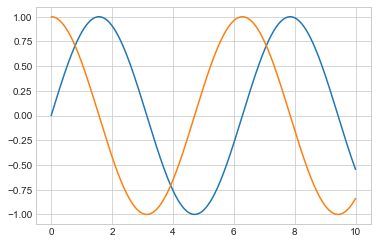
Matplotlib에서 간단한 함수를 그리는 것이 전부입니다! 이제 축과 선의 모양을 제어하는 방법에 대해 좀 더 자세히 살펴보겠습니다.
플롯 조정: 선 색상 및 스타일
플롯에 적용할 첫 번째 조정은 선 색상과 스타일을 제어하는 것입니다. ‘plt.plot’ 함수는 이를 지정하는 데 사용할 수 있는 추가 인수를 사용합니다. 색상을 조정하려면 상상할 수 있는 거의 모든 색상을 나타내는 문자열 인수를 허용하는 ‘color’ 키워드를 사용합니다. 색상은 다양한 방법으로 지정합니다. 다음 예제의 출력은 다음 그림을 참조하세요.
plt.plot(x, np.sin(x - 0), color='blue') # specify color by name
plt.plot(x, np.sin(x - 1), color='g') # short color code (rgbcmyk)
plt.plot(x, np.sin(x - 2), color='0.75') # grayscale between 0 and 1
plt.plot(x, np.sin(x - 3), color='#FFDD44') # hex code (RRGGBB, 00 to FF)
plt.plot(x, np.sin(x - 4), color=(1.0,0.2,0.3)) # RGB tuple, values 0 to 1
plt.plot(x, np.sin(x - 5), color='chartreuse'); # HTML color names supported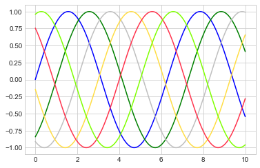
색상을 지정하지 않으면 Matplotlib는 여러 줄의 기본 색상 세트를 자동으로 순환합니다.
마찬가지로 linestyle 키워드를 사용하여 선 스타일을 조정합니다(다음 그림 참조).
plt.plot(x, x + 0, linestyle='solid')
plt.plot(x, x + 1, linestyle='dashed')
plt.plot(x, x + 2, linestyle='dashdot')
plt.plot(x, x + 3, linestyle='dotted');
# For short, you can use the following codes:
plt.plot(x, x + 4, linestyle='-') # solid
plt.plot(x, x + 5, linestyle='--') # dashed
plt.plot(x, x + 6, linestyle='-.') # dashdot
plt.plot(x, x + 7, linestyle=':'); # dotted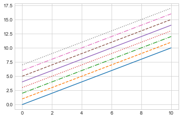
코드를 읽는 사람에게는 덜 명확할 수 있지만 linestyle 및 color 코드를 plt.plot 함수에 대한 키워드가 아닌 단일 인수로 결합하여 일부 키 입력을 절약합니다. 다음 그림은 결과를 보여줍니다.
plt.plot(x, x + 0, '-g') # solid green
plt.plot(x, x + 1, '--c') # dashed cyan
plt.plot(x, x + 2, '-.k') # dashdot black
plt.plot(x, x + 3, ':r'); # dotted red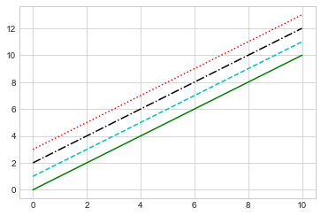
이러한 단일 문자 색상 코드는 디지털 컬러 그래픽에 일반적으로 사용되는 RGB(빨간색/녹색/파란색) 및 CMYK(청록색/자홍색/노란색/검정색) 색상 시스템의 표준 약어를 반영합니다.
플롯의 모양을 미세 조정하는 데 사용할 수 있는 다른 키워드 인수가 많이 있습니다. 자세한 내용은 IPython의 도움말 도구를 사용하여 plt.plot 함수의 독스트링을 읽어보세요(IPython의 도움말과 문서 참조).
플롯 조정: 축 제한
Matplotlib는 플롯에 대한 기본 축 제한을 적절하게 선택하지만 때로는 더 세밀하게 제어하는 것이 좋을 때도 있습니다. 제한을 조정하는 가장 기본적인 방법은 plt.xlim 및 plt.ylim 함수를 사용하는 것입니다(다음 그림 참조).
plt.plot(x, np.sin(x))
plt.xlim(-1, 11)
plt.ylim(-1.5, 1.5);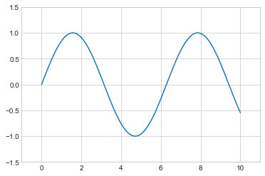
어떤 이유로 두 축 중 하나를 반대 방향으로 표시하려면 인수 순서를 반대로 바꾸면 됩니다(다음 그림 참조).
plt.plot(x, np.sin(x))
plt.xlim(10, 0)
plt.ylim(1.2, -1.2);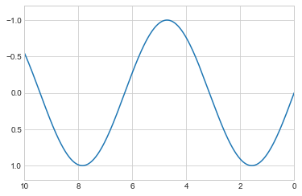
유용한 관련 방법은 plt.axis입니다(e가 있는 axes와 i가 있는 axis 사이의 잠재적인 혼동에 유의하세요). 이 방법을 사용하면 축 제한을 보다 질적으로 지정합니다. 예를 들어 다음 그림과 같이 현재 콘텐츠 주위의 경계를 자동으로 강화합니다.
plt.plot(x, np.sin(x))
plt.axis('tight');
또는 다음 그림에서 볼 수 있듯이 x의 한 단위가 y의 한 단위와 시각적으로 동일하도록 동일한 축 비율을 원하도록 지정합니다.
plt.plot(x, np.sin(x))
plt.axis('equal');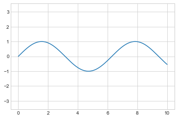
다른 축 옵션에는 on'`,off’, ``square', `image' 등이 포함됩니다. 이에 대한 자세한 내용은 plt.axis 독스트링을 참조하세요.
레이블링 플롯
이 장의 마지막 부분으로 제목, 축 레이블, 간단한 범례 등 플롯의 레이블 지정에 대해 간략하게 살펴보겠습니다. 제목과 축 레이블은 가장 간단한 레이블입니다. 빠르게 설정하는 데 사용할 수 있는 방법이 있습니다(다음 그림 참조).
plt.plot(x, np.sin(x))
plt.title("A Sine Curve")
plt.xlabel("x")
plt.ylabel("sin(x)");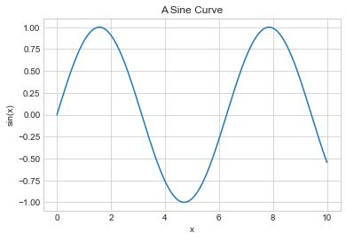
이러한 레이블의 위치, 크기 및 스타일은 독스트링에 설명된 함수에 대한 선택적 인수를 사용하여 조정합니다.
단일 축 내에 여러 선이 표시되는 경우 각 선 유형에 레이블을 지정하는 플롯 범례를 만드는 것이 유용합니다. 다시 말하지만, Matplotlib에는 이러한 범례를 빠르게 생성하는 방법이 내장되어 있습니다. 이는 (여러분이 추측한) plt.legend 메소드를 통해 수행됩니다. 이를 사용하는 유효한 방법은 여러 가지가 있지만 plot 함수의 label 키워드를 사용하여 각 줄의 레이블을 지정하는 것이 가장 쉬운 방법입니다(다음 그림 참조).
plt.plot(x, np.sin(x), '-g', label='sin(x)')
plt.plot(x, np.cos(x), ':b', label='cos(x)')
plt.axis('equal')
plt.legend();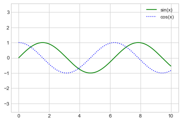
보시다시피 plt.legend 함수는 선 스타일과 색상을 추적하고 이를 올바른 레이블과 일치시킵니다. 플롯 범례 지정 및 형식 지정에 대한 자세한 내용은 plt.legend 독스트링에서 찾을 수 있습니다. 추가적으로 플롯 범례 사용자 정의에서 좀 더 고급 범례 옵션을 다룰 것입니다.
Matplotlib 문제
대부분의 plt 함수는 ax 메서드(plt.plot → ax.plot, plt.legend → ax.legend 등)로 직접 변환되지만, 모든 명령에 해당되는 것은 아닙니다. 특히 한계, 레이블, 제목을 설정하는 기능이 약간 수정되었습니다. MATLAB 스타일 함수와 객체 지향 메서드 간 전환을 위해 다음과 같이 변경하십시오.
plt.xlabel→ax.set_xlabelplt.ylabel→ax.set_ylabelplt.xlim→ax.set_xlimplt.ylim→ax.set_ylimplt.title→ax.set_title
플로팅에 대한 객체 지향 인터페이스에서는 이러한 함수를 개별적으로 호출하는 것보다 ax.set 메서드를 사용하여 이러한 모든 속성을 한 번에 설정하는 것이 더 편리한 경우가 많습니다(다음 그림 참조).
ax = plt.axes()
ax.plot(x, np.sin(x))
ax.set(xlim=(0, 10), ylim=(-2, 2),
xlabel='x', ylabel='sin(x)',
title='A Simple Plot');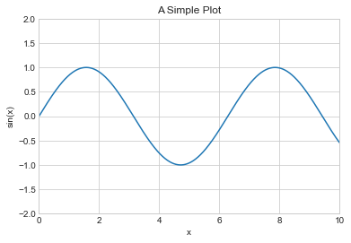